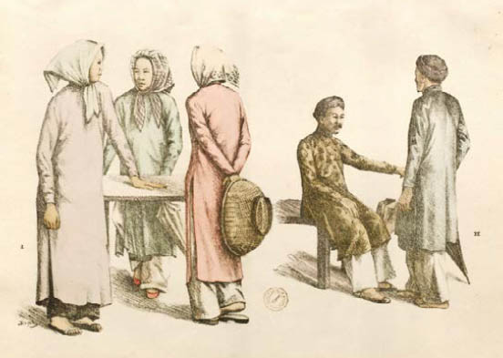

Cáo quay người lại và Jacob cầm lấy tay cô. Anh nhớ lại cảm giác khi lần đầu tiên vừa rời khỏi thế giới của mình và đột ngột rơi tòm vào một thế giới khác. Cảm giác chóng mặt. Tự hỏi rằng liệu mình đang mơ hay đang tỉnh. Anh tiếc rằng mình không thể cho cô nhiều thời gian hơn.
Jacob kéo cô lùi xa khỏi tấm gương và giơ báng súng đập vỡ lớp thủy tinh đen. Anh tiếp tục đập cho đến khi trên cái khung bạc không còn gì ngoài vài mảnh vỡ sắc nhọn. Cáo rùng mình trước từng cú giáng xuống của Jacob, như thể anh đang đập vỡ thế giới của cô, và ôm chặt lấy chiếc túi đang đựng chiếc nỏ như thể phải giữ chặt vật duy nhất còn kết nối cô với thế giới của mình. Jacob ngạc nhiên vì ma thuật của chiếc túi vẫn còn tác dụng.
“Chúng ta đang ở đâu?” Cáo thì thầm.
Đúng rồi, ở đâu?
Mọi thứ xung quanh họ tối đến mức Jacob không thể nhìn thấy bàn tay giơ lên trước mặt. Anh vấp phải một sợi dây cáp, và khi anh cố tìm chỗ bám để đứng dậy, tay anh chạm phải một lớp nhung cứng.
“Kto tu jest?” [*]
Chiếc đèn pha trên đầu họ vụt sáng chói lòa khiến Cáo phải đưa tay che mắt lại. Những mảnh gương vỡ kêu lạo xạo dưới chân cô khi cô bước lùi lại và mắc vào một tấm màn đen. Jacob nắm lấy tay cô kéo cô về phía anh.
Một sân khấu. Một chiếc bàn, một ngọn đèn, hai chiếc ghế, và giữa chúng là tấm gương. Một đạo cụ sân khấu. Không còn gì khác. Làm cách nào mà tấm gương đến được đây? Đã nhiều năm nay nó bị giấu giữa những đạo cụ sân khấu bám bụi... Có ai đã từng sử dụng nó kể từ khi Guismund cùng các hiệp sĩ của ông ta đi qua nó hay chưa, hay nó vẫn giữ bí mật của mình cho đến tận bây giờ? Làm thế nào Kẻ Tàn Sát Phù Thủy sở hữu được nó? Quá nhiều câu hỏi. Những câu hỏi Jacob đã đặt ra không biết bao nhiêu lần về chiếc gương kia. Chúng đến từ đâu? Có bao nhiêu chiếc gương như thế? Và ai đã tạo ra chúng? Anh tìm kiếm những câu trả lời trong suốt một thời gian dài, nhưng tất cả manh mối mà anh có chỉ là một mảnh giấy anh tìm thấy trong một quyển sách của cha.
Hai chiếc đèn pha khác vụt sáng lên. Những dãy ghế màu đỏ ẩn trong bóng tối. Đó là một nhà hát lớn.
“Rozbiliscie Lustro!” [*] Người đàn ông vấp phải họ, đứng như trời trồng khi nhìn thấy dấu bướm ma còn rướm máu trên áo của Jacob.
Jacob cho tay vào túi trong lúc tặng cho người đàn ông nụ cười thân thiện nhất của anh.
“Przykro mi. Zaplace za nie” [*] Tiếng Ba Lan của anh chỉ có bấy nhiêu. Nếu những gì anh nghe được đúng là tiếng Ba Lan. Jacob đã từng làm ăn với một tay mua bán đồ cổ đến từ Warschau, nhưng đã từ rất lâu rồi.
Thật may mắn, anh vẫn còn một đồng tiền to bằng phân nửa đồng Taler [*] , nhưng người đàn ông nhìn nó chằm chằm đầy nghi ngờ như thể Jacob trả cho ông tiền giả dùng trên sân khấu.
Rời khỏi đây thôi, Jacob!
Anh nắm tay Cáo kéo cô đi lên bậc thang của sân khấu. Anh vẫn có cảm giác như vừa được hồi sinh.
Những phòng hóa trang. Lại thêm một cầu thang nữa. Một sảnh nghỉ tối mò và một hàng cửa kính. Anh tìm thấy một cánh cửa không bị khóa. Làn không khí ùa vào họ mang mùi vị và âm thanh từ thế giới của anh.
Cáo không tin nổi vào mắt mình khi nhìn những con đường bốn làn xe trải ra trước mắt họ. Những ngọn đèn đường sáng hơn nhiều so với trong thế giới của cô. Một chiếc ô tô chạy vụt qua. Những cột đèn giao thông nhuộm đỏ nhựa đường, và ở phía bên kia đường một tòa nhà cao tầng đang vươn mình trên bầu trời buổi đêm.
Jacob cầm chiếc túi-giấu-đồ trên tay Cáo và kéo cô lại gần.
“Chúng ta sẽ nhanh chóng quay lại thôi,” anh nói nhỏ với cô. “Anh hứa. Anh chỉ muốn ghé qua gặp Will một chút và tìm một chỗ tốt để giấu chiếc nỏ.”
Cô gật đầu và vòng tay ôm lấy anh.
Tất cả đã kết thúc.
Và mọi sự đều tốt đẹp.